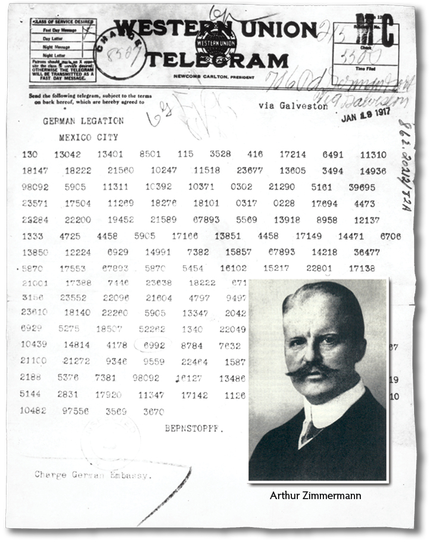
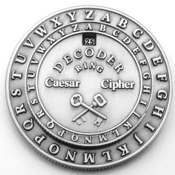

Formación Académica
Escuela Superior de Cómputo (ESCOM - IPN)
Ingeniería en Sistemas Computacionales
ActualidadCECyT 11 "Wilfrido Massieu" (IPN)
Técnico en Procesos Industriales
Educación Media SuperiorEscuela Secundaria Técnica No.32
Técnico en Maquinas Herramientas
Educación SecundariaMis Pasatiempos
Deporte
Me gusta mantenerme activo y cuidar mi salud realizando ejercicio en el GYM, además de jugar básquetbol con mis hermanos de forma ocasional.
Videojuegos y Estrategia
Paso mi tiempo libre disfrutando de juegos que requieren planificación y táctica, especialmente títulos de simulación militar y estratégica como War Thunder.
Cine y Películas
Para relajarme, disfruto mucho ver películas en casa o armar planes para salir al cine.
Datos Curiosos de Criptografía

El error criptográfico que cambió la Primera Guerra Mundial
El 16 de enero de 1917, Arthur Zimmermann envió un telegrama cifrado a México proponiendo una alianza contra EE. UU. Cada palabra fue codificada en grupos de 4 o 5 números mediante un libro de códigos. Sin embargo, la "Habitación 40" de la inteligencia británica logró descifrarlo gracias a la captura previa de libros similares, lo que aceleró la entrada de Estados Unidos en el conflicto y demostró el inmenso poder táctico del criptoanálisis.
El motor invisible detrás de las criptomonedas
La criptografía no solo sirve para ocultar información, sino para validar identidades y datos de forma inmutable. En redes como Bitcoin, se utilizan firmas digitales mediante algoritmos de curvas elípticas y funciones hash matemáticas. Esto garantiza la integridad de cada transacción en los bloques y permite operar un sistema financiero seguro sin tener que depender de un banco central o un intermediario.

El ingenioso método militar de Julio César
Uno de los primeros sistemas de protección de mensajes documentados es el "Cifrado César", un algoritmo de sustitución monoalfabética. Su funcionamiento consistía en desplazar cada letra del alfabeto un número determinado de posiciones (por ejemplo, con un desplazamiento de 3: la A se convertía en D, la B en E, la C en F, etc.). Aunque hoy es sumamente vulnerable al análisis de frecuencias, en la antigüedad era suficiente para mantener a salvo los secretos tácticos.